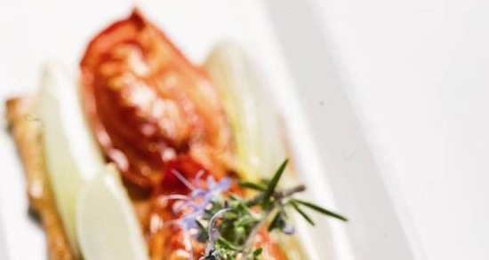

Coca de tomate y cebolla
Ingredientes:
- 125 ml leche
- 1/2 pastilla caldo verduras
- 4 tomates
- 16 g aceite
- Sal
- Aceite de oliva virgen
- 15 g azíucar
- 4 cebollas
- 500 g harina floja
- 50 ml agua
Pasos a seguir:
- Precalentar el horno a 250º.
- Para la pasta, mezclar todos los ingredientes en el orden expuesto en la lista. Amasar con las manos hasta que se pueda formar una bola. Dejar reposar la bola unos 30 minutos en un lugar un poco caliente. Estirar en forma de coca con un rodillo.
- Para el relleno, pelar y cortar la cebolla en ocho gajos y dejarlas reposar una hora con sal. Poner los tomates en rodajas gruesas en una bandeja de horno con aceite, sal, azúcar y desmenuzar media pastilla de Avecrem 100% Natural 8 Verduras y hornear durante 20 minutos.
- Remojar las cebollas, escurrirlas y colocarlas encima de la pasta, alternándolas con las rodajas de tomate. Poner la coca en horno unos 20 o 30 minutos a 180ºC. Decorar con una ramita de tomillo o romero si hubiera.
